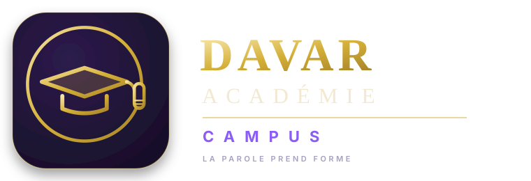
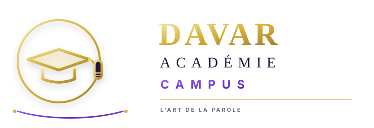
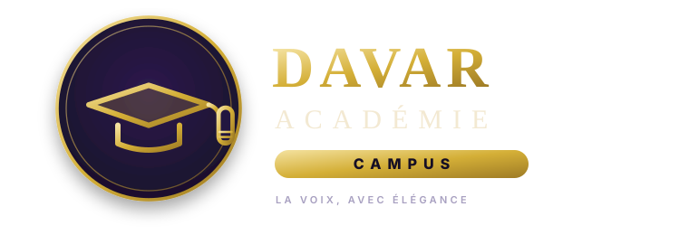

1
La Tribune
La plus proche du langage actuel : un pavé violet protecteur, une signature horizontale et un filet d’or très lisible.
sobrepavé sombremarque principale
Proposition 1
Le mortier, l’or et le violet restent dans le même esprit. Le cordon et le pompon sont remplacés par une capsule de microphone fine, reliée naturellement à la pointe du mortier et dessinée pour rester lisible à petite taille.
Production actuelle · aucune modification
Le fichier campus-anneau.svg et les autres actifs de production restent inchangés pendant la revue.
Choisissez simplement un numéro

La plus proche du langage actuel : un pavé violet protecteur, une signature horizontale et un filet d’or très lisible.

La version la plus aérée : la marque respire sans pavé et s’adapte bien aux fonds clairs, aux documents et aux en-têtes.

La plus institutionnelle : le mortier et le microphone vivent dans un sceau d’académie, conçu pour les certificats et distinctions.